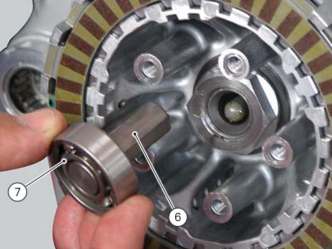

Reassembly of the clutch
Position the spacer (12).
Fit the flat ring (14) and the Belleville washer (13) on the clutch drum (8), so that the convex side faces the clutch drum.
Locate the Belleville washer (10).
Install the clutch plates (11) in the following order:
on the drum (3):
-
a series of ten driving discs (L) alternately to new driven discs (I) thickness 2 mm;
on the pusher plate (4):
-
one driven disc (H), 2 mm thick;
-
a driving disc (L).
Apply the prescribed grease to the thread of the gearbox primary shaft and the mating surface of nut (9), and fit it over Belleville washer (10).
Lock the clutch drum using the appropriate tool number
88713.3408
, and tighten the nut (9) to 190 Nm (Min. 180 Nm - Max. 200 Nm).
Insert the control pin (6) in the bearing (7) and the latter in the gearbox primary shaft.

Place the pressure plate (4) with two plates on the corresponding centring tool (A) no.
88713.3352
.
Fit the pressure plate (4).
Insert a spring (3) in each slot.
Position the O-ring (2).
Lubricate the thread of the screws (1) with oil.
Insert the screws (1).
Tighten the screws (1) to a torque of 10 Nm (Min. 9 Nm - Max. 11 Nm).
Refit the clutch cover (
Refitting the clutch cover
).
Refill the engine with oil (
Changing engine oil and filter cartridge
).
Refit the oil sump guard unit (
Refitting the oil sump guard
).